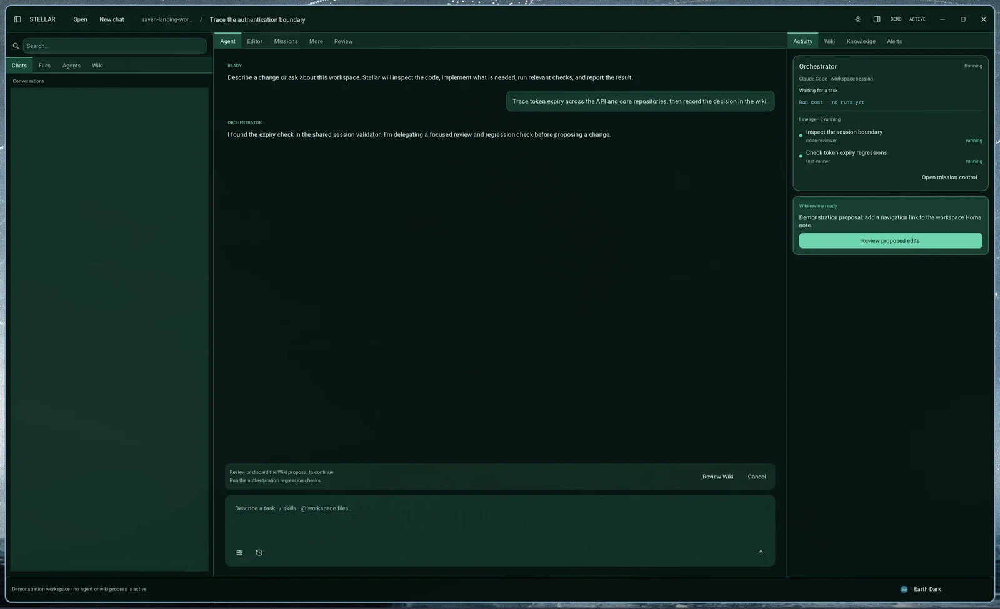

Direct the work.
Keep the knowledge.
A native Linux workspace for Claude Code and Kimi Code—one lead agent, visible delegation, and memory you review before it stays.

From prompt to durable context.
The filesystem stays the source of truth. Stellar makes agent work and its lasting knowledge visible along the way.
-
Direct one lead
Choose Claude Code or Kimi Code, then Build, Ask, or Review without manually coordinating the session.
-
See the work
Follow concise tool activity and delegated missions while the conversation stays readable.
-
Review what remains
Accept or discard proposed Markdown and graph memory before it becomes part of the workspace.